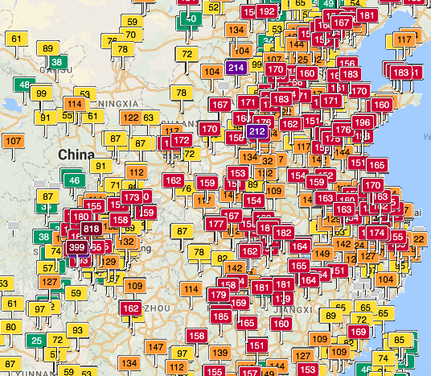

Lecture 2.4 - Model Building

Interpretation steps
Interpretation goals
Learning how to build an appropriate model for your data is a deep and difficult topic that we can only cover briefly in this class. However, the steps for checking if you have a high quality model are relevant no matter your model building process or method. We will practice model building in the following exercises.
- Learning objectives:
- Learn how to generate testable hypotheses
- Continue building skills in interpreting variables
- Practice model building
Hypothesis development
Make a list of hypothesized relationships to AQI. For each variable, list what you expect its relationship to AQI to be and how strong you expect the relationship to be.
After you have done that, write down the order in which you expect predictor variables to best predict AQI – which do you think are the most important in ‘causing’ an increase in AQI?
Variable exploration
For this part of the lab, you should explore the distribution of all of the variables via histograms. Make note of any outliers or non-normal distributions that may cause problems for your later statistical test. Also consider if any variables need to be recoded or transformed.
Two variable relationship
Based on your hypothesized relationship between each of the predictor variables and AQI, check the two-way (meaning relationships between each individual predictor variable and the response variable) to see your expectations are met or not. You may also want to check the correlations between all variables. The command to create a correlation matrix plot is
install.packages("ggcorrplot")
library(ggcorrplot)
aqicors <- cor(data.frame(china.aqi$AQI,
china.aqi$Precipitation,
china.aqi$GDP),
use="complete.obs")
ggcorrplot(aqicors)You can learn more about ggcorrplot here
Did any of the two-way relationships surprise you? Which ones and why?
Model building
Now, armed with your hypotheses, work with your lab partner to create the best regression model possible by trying combinations of the most ‘important’ variables until you arrive at a model you are happy with.
Unless you think two variables are both extremely important, it is a bad idea to include two variables that are highly correlated with each other – they are almost certainly measuring the same concept and will make it difficult to calculate accurate regression coefficient estimates
Pay special attention to the residual plots and make sure to carefully interpret your coefficients, \(r^2\) and also make sure to justify your model with a good argument about how the causation works.
Also, remember that your model must meet the three criteria:
- Linearity
- Equal Variance – Does the Plot Thicken?
- No Problem Residuals
As a reminder, to generate residuals, you can do so with the augment() function from the broom library:
fit <- lm(data=china.aqi, AQI ~ GDP)
aug.fit <- augment(fit)You can then graph them with the following commands:
ggplot(lmodel.data, aes(x=.fitted, y=.resid)) +
geom_point() +
geom_hline(yintercept=0)As for partial residual plots, the way to plot partial residuals is:
install.packages("visreg")
library(visreg)
eff <- visreg(lmodel, "GDP", gg=TRUE)
eff+ggtitle("Partial Residual Plot")Model interpretation
Next, interpret your coefficients – think about whether your predictor variables are predicted to make a big or a small change in the response variable.
- Some things to consider:
- What are the units of the slope coefficients?
- How big of an impact does a one unit change in the predictor variable have on the response variable?
- Is that change a little or a lot?
Then, evaluate your hypotheses with respect to the outcome of your model. Were you surprised by any of the results? Why or why not?
If you finish early, start over again and revise your model based on the first multiple regression attempt